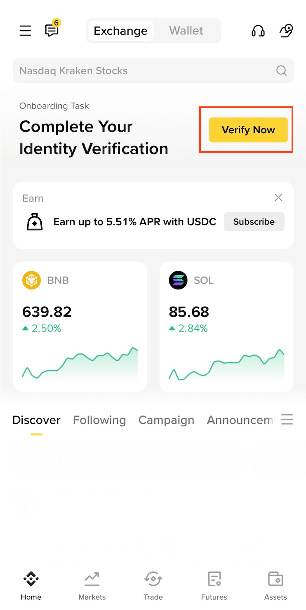
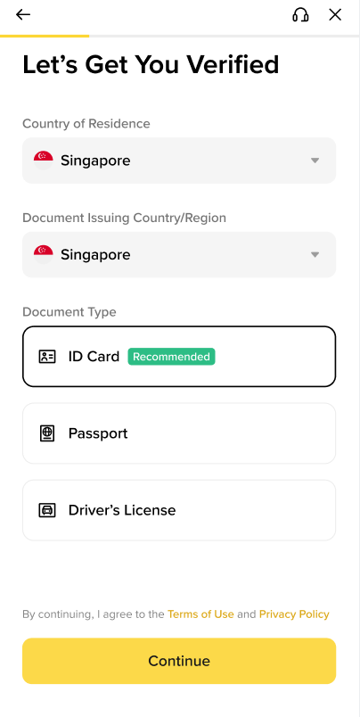
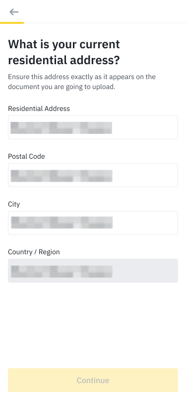
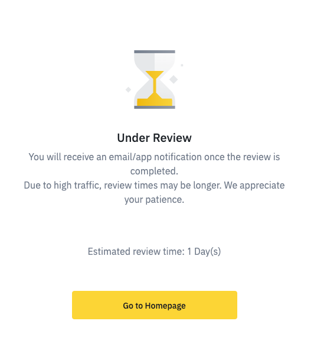
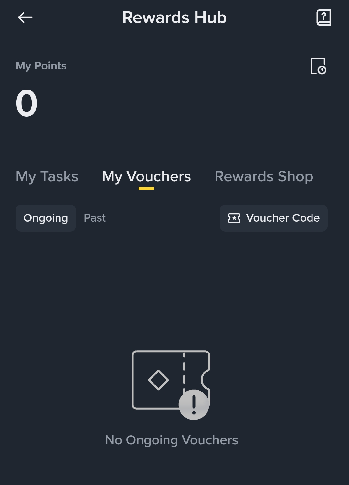

¿De qué se trata?
Binance Charity está donando un total de 3 millones de dólares a las personas afectadas por los terremotos. La ayuda se entrega como un cupón de 20 USDT (equivalente a unos 20 dólares en criptomoneda estable) por cada persona que cumpla los requisitos, hasta agotar los fondos disponibles.
USDT es una "stablecoin": una criptomoneda cuyo valor se mantiene cercano a 1 dólar. Una vez recibida, puedes cambiarla a bolívares (VES) dentro de Binance.
¿Quién puede recibir la ayuda?
Debes cumplir todos estos requisitos:
- Vivir en uno de los estados afectados (ver lista abajo).
- Tener una cuenta de Binance.
- Haber completado la verificación de identidad (eKYC).
- Haber completado la verificación de domicilio (POA) antes del 10 de julio de 2026.
Estados / regiones que califican:
- La Guaira
- Distrito Capital
- Miranda
- Aragua
- Carabobo
- Falcón
- Yaracuy
- Binance nunca te pedirá pagar nada para "liberar" o "reclamar" tu ayuda.
- Usa solo la aplicación oficial de Binance o el sitio binance.com. Desconfía de enlaces enviados por WhatsApp, Telegram o redes sociales.
- Nunca compartas tu contraseña, tu código de verificación, ni tu "frase de recuperación" (seed phrase) con nadie. Ningún empleado real de Binance te los pedirá.
- Esta página es una guía comunitaria gratuita; no te pide datos ni dinero.
Pasos para recibir tu ayuda
La ayuda se deposita de forma automática una vez que tu cuenta esté verificada. No tienes que "reclamarla" manualmente: lo importante es completar la verificación de identidad y de domicilio a tiempo.
Nota: algunas imágenes provienen de la aplicación de Binance en inglés. En tu teléfono pueden verse en español, pero los pasos y botones son los mismos.
-
Descarga la app oficial o entra a binance.com
Si aún no tienes cuenta, créala con tu correo o número de teléfono en la aplicación oficial de Binance (App Store / Google Play) o en binance.com.

Pantalla de inicio con el botón "Verify Now" para empezar la verificación -
Completa la verificación de identidad (eKYC)
Ve a Perfil → Verificación de Identidad. Necesitarás un documento de identidad válido (cédula o pasaporte) y tomarte una selfie. Sigue las instrucciones en pantalla hasta que tu cuenta aparezca como Verificada.

Verificación de identidad (eKYC) -
Completa la verificación de domicilio (POA)
En el mismo menú de verificación, busca Comprobante de Domicilio (Proof of Address / POA). Sube un documento reciente que muestre tu dirección en uno de los estados que califican (por ejemplo, un recibo de servicios o estado de cuenta).
Este es el paso clave para esta ayuda y debe estar listo antes del 10 de julio de 2026.

Verificación de domicilio (POA) -
Espera el depósito (hasta 30 días)
Una vez aprobada tu verificación de domicilio, recibirás el cupón de 20 USDT en un plazo máximo de 30 días. Aparecerá en la sección de recompensas de tu cuenta (Zona de Recompensas / Rewards Hub).

Pantalla de "En revisión" después de enviar tu verificación -
Reclama y usa tu cupón
Abre Perfil → Zona de Recompensas (Rewards Hub), ubica el cupón de 20 USDT y actívalo. El saldo quedará en tu billetera (Wallet). Desde ahí puedes convertirlo a bolívares (VES) o usarlo con Binance Pay.

En "Rewards Hub → My Vouchers" aparecerá tu cupón de 20 USDT cuando esté disponible
Beneficios adicionales (por tiempo limitado)
- Comisiones gratis en operaciones P2P en bolívares (VES) hasta el 2 de julio de 2026.
- Comisiones de comercio eliminadas en Binance Pay durante 7 días.
Preguntas frecuentes
Según la información publicada por Binance, esta ayuda específica está dirigida a los estados más afectados (La Guaira, Distrito Capital, Miranda, Aragua, Carabobo, Falcón y Yaracuy). Si no vives en uno de ellos, es posible que no califiques para este programa en particular.
No. La ayuda es gratuita. Nadie debería pedirte dinero para "liberarla". Si alguien lo hace, es una estafa.
Hasta 30 días desde que apruebas tu verificación de domicilio (POA). Aparecerá en la Zona de Recompensas (Rewards Hub) de tu cuenta.
Dentro de Binance puedes usar la función de "Convertir" o el mercado P2P para cambiar tus USDT a bolívares (VES) y luego retirarlos a tu cuenta bancaria o pago móvil.
Fuentes oficiales
Verifica siempre la información en los canales oficiales de Binance:
Esta es una guía comunitaria no oficial creada para ayudar a los afectados por el terremoto. No estoy afiliado a Binance. La información puede cambiar; confirma siempre los detalles y plazos en los enlaces oficiales de arriba.